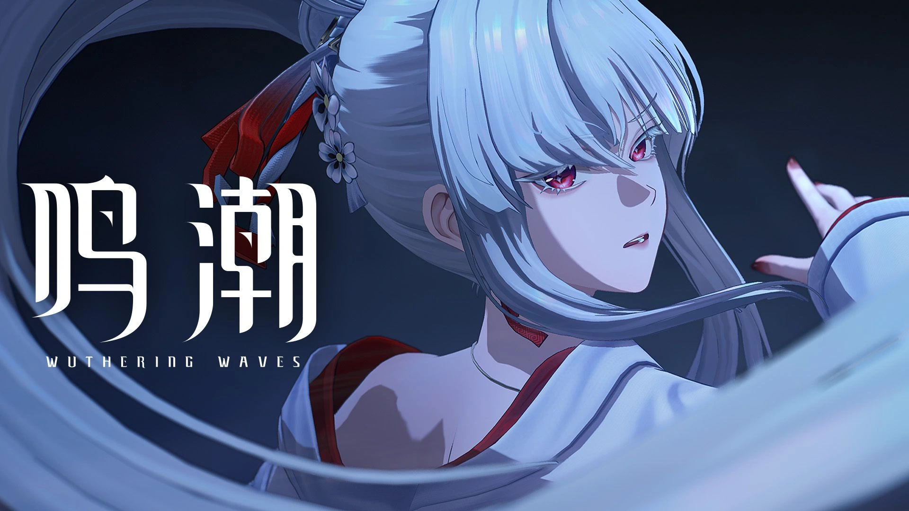
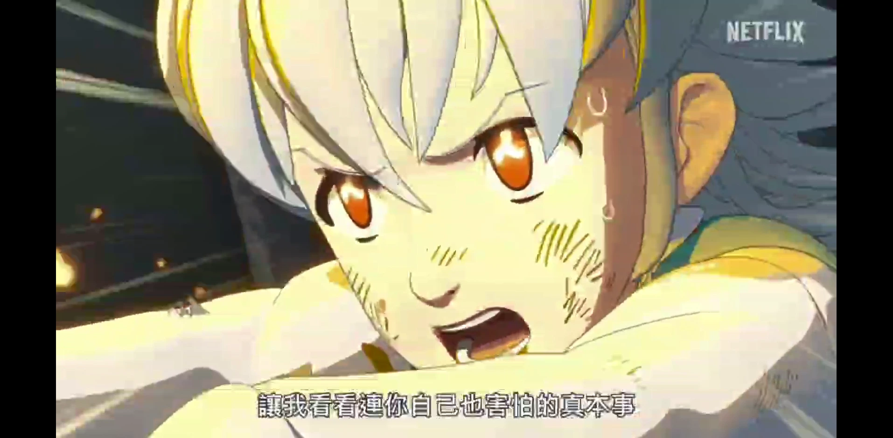

背光不等于把脸一并压暗
需要同时考虑场次的背光气氛、人物表情和运动后的受光关系。天罡项目中使用骨骼跟随灯光，处理角色运动中的灯光跟随需求。

PROFILE / 求职方向
目前在库洛游戏负责《鸣潮》角色宣传 CG 的 UE 灯光与 Nuke 合成。从吾立方的 Arnold 三渲二，到若森的纯 UE 电影，再到有狐的混合渲染剧集，持续围绕角色、场景与最终画面制作。
以灯光为求职重心，能够衔接布光、分层渲染、合成修整与审片交付，也希望向实时场景灯光方向拓展。
01 / CURRENT WORK
UE Lighting & Nuke Compositing
我的职责UE 灯光制作与渲染、Nuke 合成，持续参与三渲二角色宣传影像。
展示范围以下为官方公开片单选集；整片为团队作品，个人镜头归属与时间码待补充。
02 / LIGHTING JUDGEMENT
从已有制作经历出发
角色可读性 / 场景层次 / 光色衔接
需要同时考虑场次的背光气氛、人物表情和运动后的受光关系。天罡项目中使用骨骼跟随灯光，处理角色运动中的灯光跟随需求。
前景、人物与远景需要保留不同的明暗关系。天罡竹林在布光后补充人工阴影；小狐狸在合成中处理远景空气雾，让背景与角色不挤在同一层。
三渲二的最终阴影不只取决于灯的位置。须佐之男用 Mask Alpha 调整，七大罪按角色阴影色建立 Mask，再结合 Roto 与 UV 修绘处理局部。
图像用于展示项目画风；右侧为项目层面的制作思路整理，不是对这张成片的逐灯拆解。
03 / PRODUCTION CASES
具体限制、个人处理与交付
点击案例图片可查看完整作品与项目详情
案例依据原简历及作品资料整理；成片与项目宣传片保留团队署名，不作为制作前后对比。
04 / FILM & ANIMATION
每个项目独立说明职责与渲染流程
成片图 / 宣传片 / 制作介绍
05 / CRAFT & TOOLS
灯光为主，合成贯穿到最终输出。
以下均对应已有制作经历。
角色与场景布光 · 氛围制作 · 序列输出
多通道整合 · 风格化阴影 · 画面统一

角色灯光、材质检查及分层组织；检查 ABC、解算和材质衔接，理解模型、UV 与贴图修改对下游的影响。
AiToon 三渲二与 Color、Mask、Rim、Matte 分层；角色制作中规划 Dome、Key、Fill、Rim 及 SSS、Specular 信息。
在《西行纪》中完成 Maya / Redshift 灯光渲染、渲染设置及 AOV 输出，进入 Nuke 做分层合成与场次校色。
06 / PRODUCTION RESPONSIBILITY
镜头制作、反馈迭代与上下游衔接
来自商业 CG、电影和剧集的流程经验

接收资产后检查角色 ABC、解算和材质，结合场次氛围图确认制作方向；了解模型、UV、贴图修改环节，配合上下游处理资产问题。
在导演、视效总监与客户反馈下调整灯光和合成；天罡制作中有直接在 UE 工程内配合审片、现场修改的经历。
参与本地 UE 渲染、角色 Renderbus 提交与序列管理，按项目约定输出 MOV 审片及 PNG 序列，跟进返修。
07 / EXPERIENCE
持续参与三渲二角色宣传影像的灯光与合成，覆盖多个角色及版本周期。以角色宣传 CG 为工作对象，衔接 UE 灯光制作与 Nuke 最终画面。
查看当前参与片单 ↗参与 UE 场景与 Maya / Arnold 角色的混合渲染制作、Nuke 合成，处理灯光通道、角色与背景的衔接；参与本地及 Renderbus 渲染任务与镜头交付。
对照场次氛围图完成 UE 角色及场景布光，处理背光、骨骼跟随灯光与竹林人工阴影；跟进导演、视效审片，输出序列与 Nuke 审片文件。
Maya / Arnold 三渲二灯光与分层渲染；在 Nuke 中进行阴影控制、Roto 跟踪和 UV 修绘，按项目流程输出审片及下游序列。
优先灯光岗位，面向角色宣传 CG、风格化影像与动画电影；发挥 UE 与离线渲染经验，以及从灯光到合成的完整制作视角。
继续打磨色彩与光影判断、跨镜头连续性，用更清晰的灯组和 Nuke 节点组织表达意图，积累能够说明取舍的镜头拆解。
对游戏研发灯光岗位保持开放。后续以可运行场景补充动态光照、连续性及性能取舍的作品证据；这是发展方向，不作为已有研发经历。
LET’S MAKE SOMETHING WORTH SEEING.
下载脱敏简历 PDF ↓Z 女士 · 游戏灯光师 / 灯光合成师
UE / Nuke / Maya / Arnold / Redshift